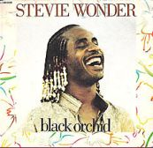
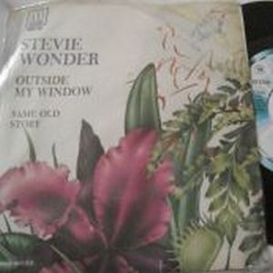
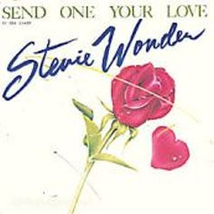

Este sería el primer trabajo que realiza Stevie Wonder para la creación de una banda sonora, el documental "La Vida Secreta de las Plantas"(The Secret Life Of Plants), basado en un libro del mismo nombre de Wallon Green. Mientras el productor del documental Michael Braun y el ingeniero de sonido Gary Olazabal le fueron transmitiendo y describiendo detalle tras detalle cada secuencia del documental, Stevie Wonder fue transformándolo en sensaciones sonoras. Fue grabado entre febrero y abril de 1979 y lanzado a finales de octubre. Es un álbum doble que sale tres años después del enorme éxito del disco anterior, y que no es bien acogido por la crítica; el disco era en buena parte instrumental y muy poco ortodoxo en el aspecto comercial, dándose más prioridad al aspecto compositivo y creativo. A pesar de eso y de que el documental no fue exhibido al público en general, consiguió un disco de platino y ser nº 4 en las listas Pop y R&B de USA.
El viaje a través de la vida secreta de las plantas, empleaba combinaciones poco usuales del sintetizador, incluyendo el primer uso de un sintetizador digital de muestreo, y es una de las primeras grabaciones digitales. En este disco Stevie Wonder mezclaba sonidos del folklore oriental, música africana, jazz, música ambiental, o clásica, acreditando una de las primeras grabaciones New Age. La portada del álbum fue seleccionada por la revista Rolling Stone en 1991 en una lista en la que se incluían las mejores 100 portadas clásicas. El dominio técnico de Stevie Wonder, se fusionó perfectamente con el misticismo sugerente que irradiaba el contenido del documental, creando un testimonio fascinador de la simbiosis emocional y espiritual que puede haber entre las plantas y el hombre. Un disco de culto para muchos, que ha conseguido que sus grabaciones digitales fueran influencias para el nuevo sonido digital que llegaría poco después en la música de los años 80.

La esencia de un genio; Black Orchid
 